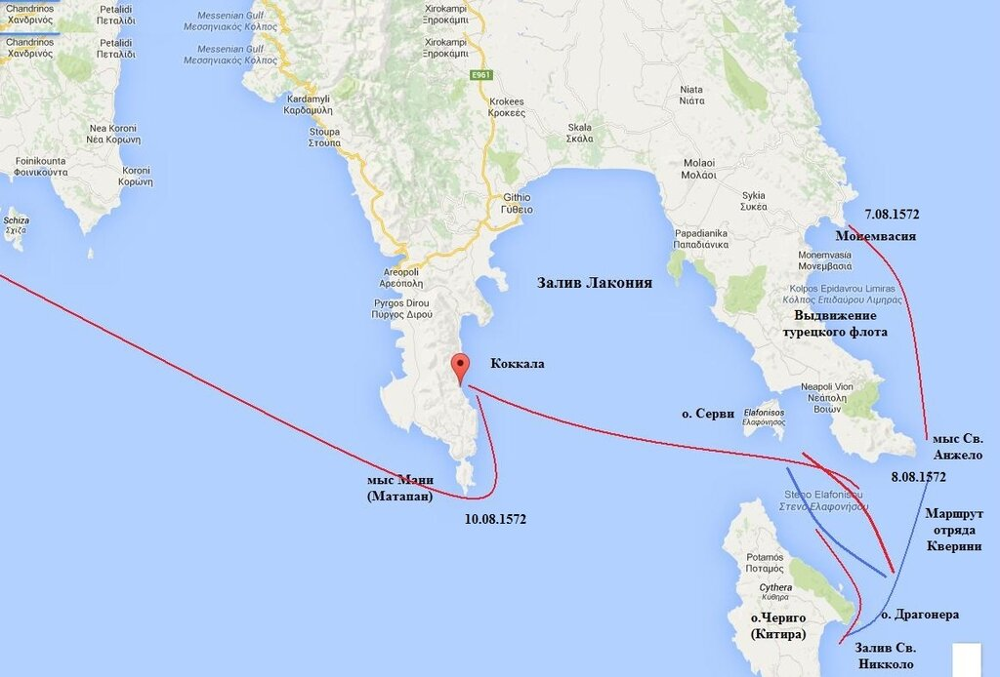
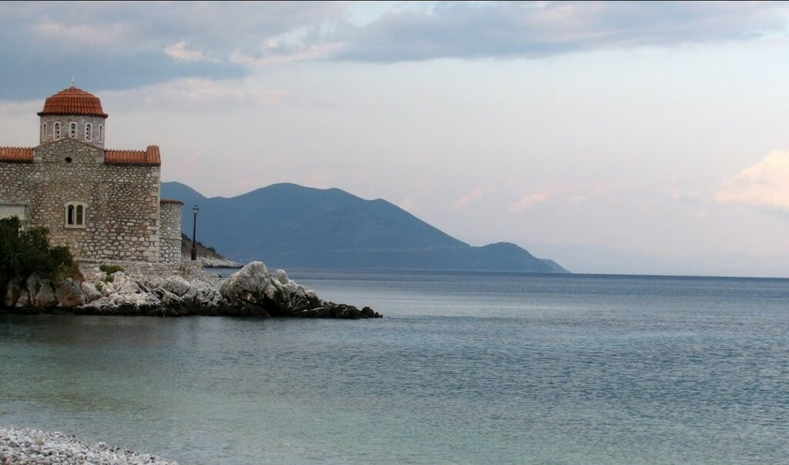
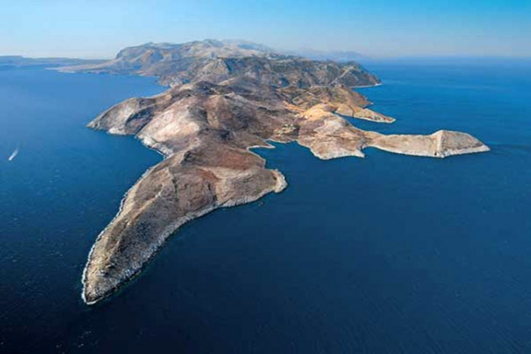
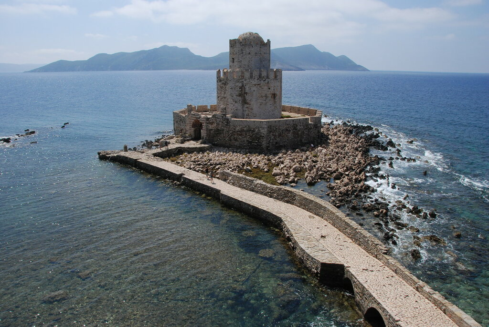

Итак, капудан-паша Улудж Али 7 августа 1572 года вывел турецкий флот из Монемвасии с намерением найти и уничтожить объединенный флот Священной лиги. В этот же день рано утром в район мыса Св. Анжело вышел разведывательный отряд христианского флота в составе четырех галер под командованием Марко Кверини для сбора информации о турецкой армаде. У мыса Кверини заметил разведывательный дозор турок в составе шести галер и принял решение дать им бой. Однако турки, несмотря на численное превосходство, отошли к своим главным силам. Кверини также вернулся в залив Св. Никколо на острове Чериго, где сообщил о полученных данных Маркантонио Колонне, исполнявшем обязанности главнокомандующего на период отсутствия Дона Хуана. Колонна приказал вывести галеасы и парусные корабли, вооруженные тяжелыми орудиями, из гавани на позиции по вероятному маршруту движения турецкого флота для обеспечения безопасного развертывания своей армады в боевой порядок.

Маркантонио Колонна не стал изобретать новых схем и развернул свой флот практически в такие же порядки, которые применялись во время сражения при Лепанто. Центральная эскадра ордера насчитывала 58 галер, включая флагманские галеры Маркантонио Колонны, венецианского капитан-генерала Фоскарини и командующего испанской эскадрой мальтийского рыцаря Жиля де Андраде. Правым крылом (40 галер) командовал генеральный проведитор венецианского флота Джакомо Соранцо, левым (также 40 галер) – другой венецианский проведитор Антонио да Канале. Перед центром находились два венецианских галеаса, в тылу – семь галер резерва и несколько галиотов и бригантин. Весь ордер занимал пространство от острова Серви (Элафониси) до острова Драгонера у входа в залив Св. Никколо.
Ветер был слабый, поэтому галеасы и парусные корабли очень медленно сближались с турецким флотом, развернувшимся к этому времени напротив боевого ордера христиан. Как только снаряды венецианских галеасов и парусников стали доставать до турецких галер, Улудж Али дал команду поставить дымовую завесу и под ее прикрытием направился к выходу в открытое море (se retiró a la mar). Турецкие галеры были меньше и маневренней христианских, поэтому они стали охватывать левый фланг флота Колонны. Однако нарушить боевые порядки христиан турецкий адмирал не смог, Колонна медленно развернул строй своих галер фронтом к противнику и вывел на новые позиции свои галеасы и тяжелые парусники. Улудж Али попытался повторить свой успешный маневр, осуществленный при Лепанто, и прорваться сквозь строй христиан между эскадрами центра и одного из флангов, однако Колонна не позволил ему этого сделать, удерживая плотный строй своих галер.
К этому времени стало темнеть и Улудж Али принял решение вывести свой флот из соприкосновения с противником и отвести его в Лаконский залив, в порт Коккала.

Бухта Коккала, фото Alon Appleboim
Колонна, потеряв контакт с противником, также решил отвести свои галеры на Чериго, где пополнить запасы воды и дать отдых гребцам.
На следующий день, 8 августа 1572 года, Колонна послал одну галеру и галиот на Корфу, где по его расчетам должен был находиться Дон Хуан, с предостережением не выходить из базы, так как со своими пятьюдесятью галерами и тридцатью парусными судами он легко мог стать добычей превосходящих сил турок. Главнокомандующему рекомендовалось дожидаться флота на Корфу.
9 августа Колонна и Фоскарини вывели свои эскадры из порта на Чериго и взяли курс на Корфу для соединения с эскадрой Дона Хуана. На рассвете 10 августа они вновь повстречались с флотом Улудж Али, который вышел из порта Коккала и огибал мыс Мани (Матапан).

Вид на полуостров Мани и мыс Матапан
Проведитор Соранцо, который командовал правым флангом христиан, с двумя галеасами и небольшим числом галер устремился вперед, ведя артиллерийский огонь по турецким кораблям. Турецкий левый фланг отступил, увлекая за собой корабли Соранцо. Между отрядом проведитора и основными силами христиан появился разрыв, чем не замедлил воспользоваться Улудж Али. Возникла серьезная угроза для христиан. Эскдра Соранцо оказалась полностью изолированной от ядра христианского флота и была на волосок от гибели. Но сказалось явное преимущество христиан в тяжелой артиллерии. Огонь галеасов и парусников вынудил Улудж Али отступить к мысу Мани, а затем и вовсе направить свой флот в гавани Модона и Наварино, чтобы спасти флот от надвигающегося шторма.

Вид бухты Модона (Метони)
Мы не знаем достоверно о потерях сторон в этой стычке. Пишут, что турки от огня артиллерии потеряли семь галер. Но не все источники это подтверждают.
Галеры христиан вернулись в закрытые бухты Чериго, где оставались четыре дня. Все это время командиры обсуждали план дальнейших действий. Идти ли на Корфу налегке, оставив галеасы и тяжелые парусники на Чериго? Но смогут ли галеры христиан проскочить без поддержки артиллерии тяжелых кораблей мимо турецкого флота? И не сожгут ли турки парусники христиан, лишившиеся поддержки галерного флота? В конце концов было решено направиться на Занте (Закинф), и далее на Корфу в полном составе. Переход прошел в целом благополучно и объединенный флот 17 (или 18) августа успешно прибыл на Занте.
Продолжим в следующий раз. Но сейчас хочется сказать, что мы старались следовать логике событий, подтвержденных большинством морских историков, без домыслов и авторских отступлений. Художественное описание событий можно найти, в частности, в интересной книге японской писательницы Нанами Шионо (перевод на русский язык - Последний час рыцарей , 2011 г., АСТ). Вот цитата из нее, относящаяся к этим событиям:
4 августа флотилия остановилась у острова Цериго, расположенного у южного побережья полуострова Пелопоннес и принадлежавшего Венеции.
Было доложено, что турецкая эскадра из ста шестидесяти кораблей стояла в гавани Мальвазии. А так как это было в дне плавания от местонахождения христианской флотилии, союзники решили начать боевое построение.
Как и в Лепанто, формация получилась смешанной: корабли разных государств распределились по всем ее частям равномерно. Но в этом году венецианские суда составили подавляющее большинство. Поэтому было решено расположить галеры по группам из пяти: три корабля из Венеции, по одному — из Испании и Папского государства. Главная сила снова сосредоточилась в центре построения, вокруг флагманской галеры Колонны. С левого фланга от судна Колонны располагался венецианский главнокомандующий Фоскарини, а справа — командир испанской эскадры дон Андраде. Отсутствовал наемный капитан Дориа, чье поведение в прошлогодней кампании оказалось крайне подозрительным.
А тем временем Улудж-Али, узнавший о приближении христианской флотилии, решил не покидать гавань Мальвазии. Он оставался там до 10 августа, когда между противниками состоялась даже не битва, а незначительная стычка, в которой турки понесли больше потерь, чем христиане. Так, семь мусульманских галер были оставлены из-за невосстановимых повреждений. В итоге Улудж-Али с остатками своей эскадры удалился обратно в гавань.
Внезапно Колонна стал утверждать, что поскольку дон Хуан уже достиг Корфу, флотилия должна повернуть назад и встретиться с ним либо на Корфу, либо где-нибудь в другом месте по дороге от нынешнего местоположения объединенной флотилии. Свое решение Колонна мотивировал тем, что бывалому пирату Улудж-Али, знавшему Средиземноморье как свои пять пальцев, ничего не стоило ускользнуть от главной силы союзников и напасть на пятьдесят с небольшим галер дона Хуана. А пока этого не произошло, союзной флотилии необходимо без замедлений отправляться на помощь герцогу Австрийскому.
Венецианские командиры были категорически против, но на сей раз здесь не было Себастьяно Веньеро, который бы физически припугнул маленького и изящного Колонну, а словами заставил его сжаться от страха подобно голубю перед орлом.
Колонна воспользовался полномочиями главнокомандующего флотилии, которыми он располагал до объединения этих кораблей с галерами дона Хуана. Любезный венецианский адмирал Фоскарини, в свою очередь, уступил требованиям Колонны. В итоге флотилия, несмотря на то что враг был так доступен, решила уйти.
(Перевод В.А.Душенкова)
Как видите, не во всем наши взгляды совпадают с точкой зрения японского автора. Но это вполне естественно: каждый ставит и решает свои задачи.